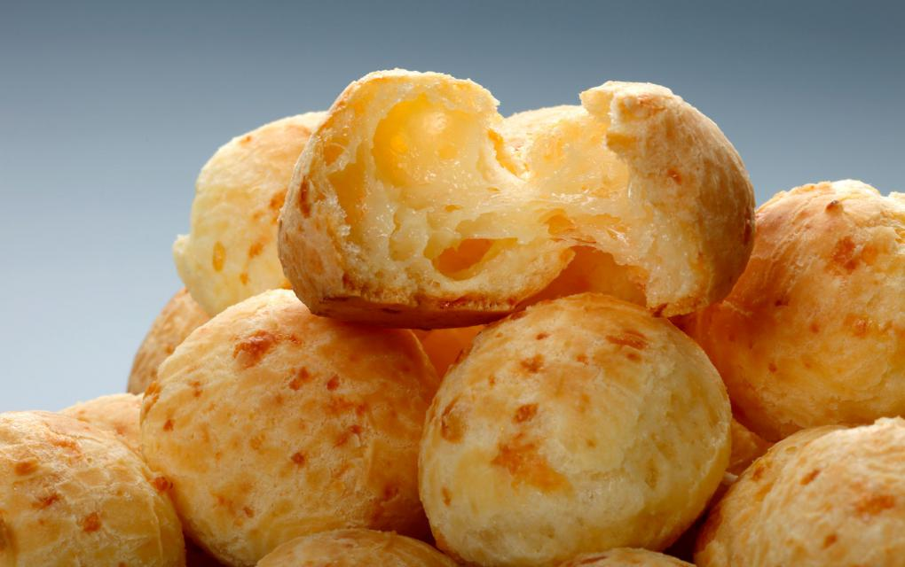

Pão de Queijo

Jamais coloque os ovos com a massa quente, senão eles cozinham e o pão não cresce!
Ingredientes
- 1 ovo inteiro
- 1 colher (café) de sal
- 1 xícara (chá) de leite
- 1 xícara (chá) de queijo minas meia cura ralado
- 1 xícara (chá) de polvilho azedo
Modo de preparo
- Em uma vasilha, misture todos os ingredientes, menos o leite.
- Em seguida, vá adicionando o leite aos poucos, até que a massa fique homogênea
- Modele os pães e coloque-os em forma untada com óleo
- Levar ao forno pré aquecido por 40 minutos ou até dourar.